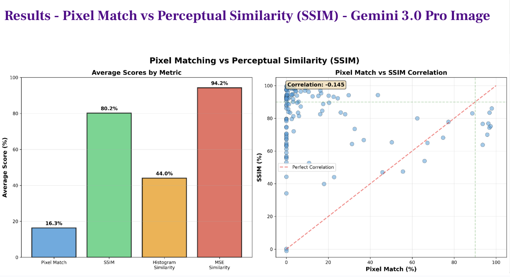
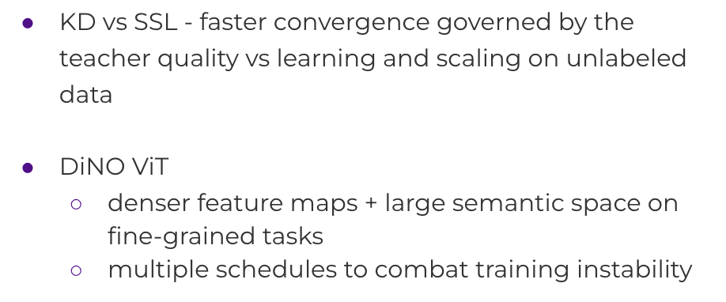

|
Vaibhavi Singh I am a graduate student in Computer Science at NYU Courant, specializing in spatial reasoning and planning in vision-language models. I study how VLMs solve complex visual and spatial problems through structured reasoning, with applications to embodied agents and robotic systems. Prior to NYU, I built core spatial rendering and imaging systems at Adobe, powering Photoshop, Substance 3D, and Creative Cloud — before moving through Salesforce and a healthcare AI startup, where I worked on learning from noisy temporal data in clinical applications. |

Research |
|

GVR-Bench: Probing Spatial Reasoning Limits in Vision-Language Models
Geometric Reasoning, Visual Grounding, Spatial Transformations
Developed a systematic evaluation framework to probe the spatial reasoning capabilities of Vision-Language Models in deterministic settings. By engineering a suite of programmatic geometric tasks (e.g., precise rotations, spatial translations), demonstrated a critical dissociation between perceptual fidelity and logical execution. SOTA models achieved only 16.8% pixel-level accuracy despite maintaining high perceptual similarity. Our analysis established a formal error taxonomy—classifying failures into geometric imprecision, grounding errors, and hallucinations—providing empirical evidence that current end-to-end architectures require hybrid spatial computation modules for precise robotic manipulation. Paper Code Slides |
|

Tokenization Density vs. Scale: Dissecting Self-Supervised Learning Under Resource Constraints
Vision Transformers, Spatial Tokenization, Self-Supervised Learning, Fine-Grained Recognition
Trained self-supervised DiNOv1 models from scratch on low-resolution images (96×96 pixels) to investigate representation learning under severe resource constraints. Identified spatial tokenization density as the primary architectural bottleneck—switching from 16×16 patches (36 tokens/image) to 8×8 patches (144 tokens/image) improved fine-grained classification accuracy by 6 percentage points, outweighing gains from model depth or dataset scale. Demonstrated that strategically curated domain-aligned unlabeled data (74K task-relevant samples) provides superlinear returns compared to 10× larger generic datasets under compute constraints. Results reveal that feature tokenization granularity determines the discriminative capacity ceiling for constrained-resolution inputs, with implications for efficient vision encoders in robotics where spatial resolution and data efficiency are critical. Paper Slides |
Academic Service |
|
NeurIPS 2025 — Ethics Reviewer (Datasets & Benchmarks), Technical Reviewer (UniReps, ML4PS)
ACL ARR 2026 — Reviewer |
Experience |
|
Machine Learning Engineer
Healthcare AI Startup, India 2024 – 2025 Built clinical risk prediction models (XGBoost, TCN) achieving 0.87 F1-score through feature engineering, SMOTE for class imbalance, & hyperparameter optimization. Processed sparse EMR data for early-stage healthcare applications. |
|
Software Engineer II
Salesforce, India 2023 – 2024 Engineered petabyte-scale data ingestion pipelines, reducing latency by 30% for Einstein AI & real-time analytics. Scaled multi-tenant Kubernetes infrastructure on AWS for 200+ microservices. |
|
ML Systems Engineer (MTS II)
Adobe, India 2021 – 2023 Optimized heterogeneous compute (CPU/GPU) architectures for Photoshop and Creative Cloud applications, reducing latency for 20M+ users. Extended core C++ image-processing engines to handle complex image analysis and color rendering, ensuring high-throughput performance under strict SLAs. |
|
Cloud Infrastructure Engineer (MTS I)
Adobe, India 2019 – 2021 Scaled distributed microservices for Adobe Cloud Platform, optimizing high-throughput request handling for 10M+ daily users. Reduced compute overhead by 12% through system-level performance profiling. |
Education |
|
M.S. Computer Science (Machine Learning)
New York University, Courant Institute 2025 – 2027 (expected) GPA: 3.89/4.00 Research focus: spatial reasoning and planning in vision-language models Coursework: Deep Learning (Yann LeCun), Computer Vision (Saining Xie), Natural Language Processing (Eunsol Choi) |
|
B.E. Computer Engineering (Hons)
Netaji Subhas Institute of Technology, University of Delhi 2015 – 2019 First Class with Distinction
Graduated in the top 10% of the department
|
|
Last updated: February 17, 2026
|